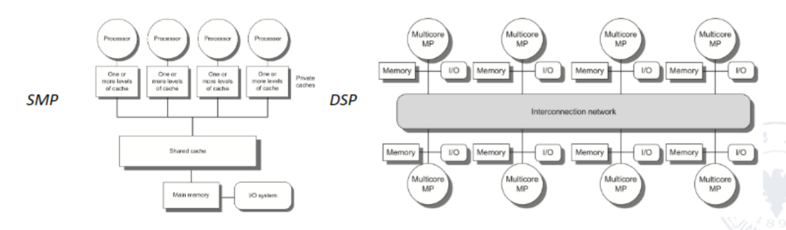
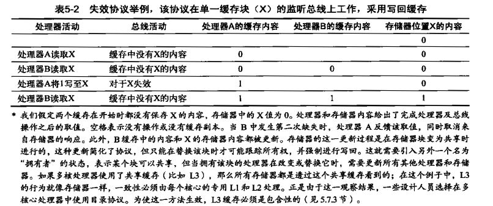
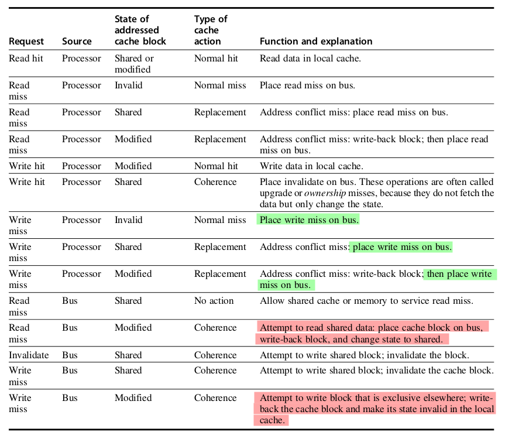
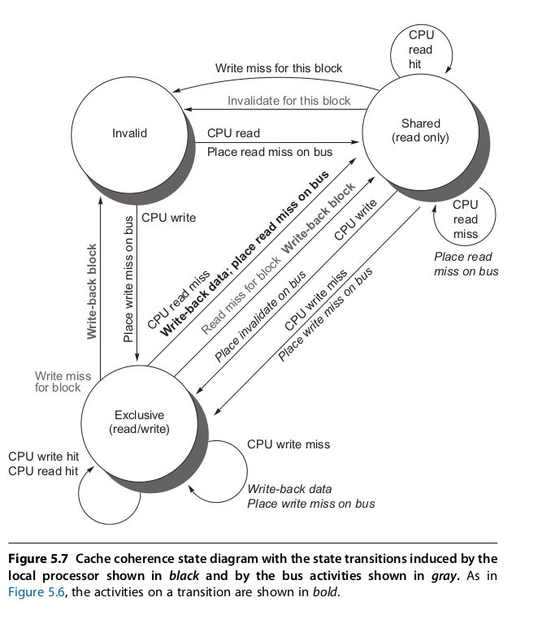
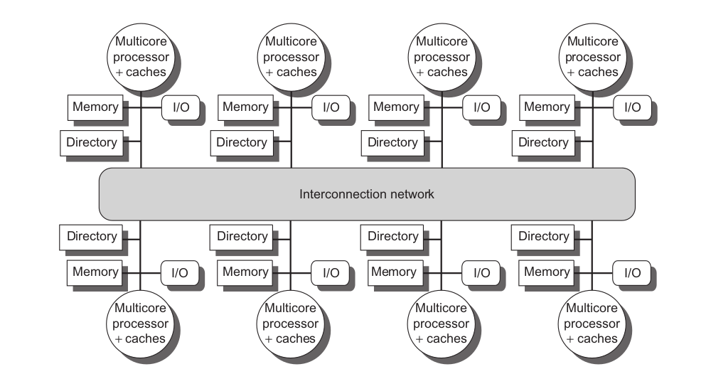
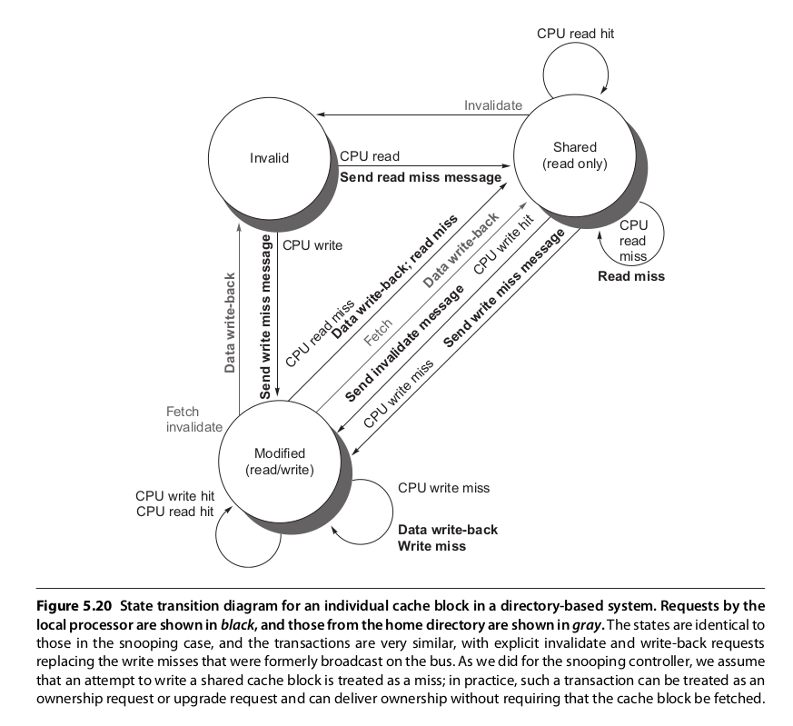
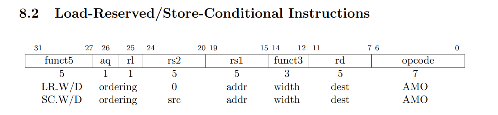

TLP
线程级并行 (TLP) 意味着存在多个程序计数器，因此主要通过 MIMD 加以开发。为了充分利用拥有 n 个处理器的 MIMD 多处理器,通常必须拥有至少 n 个要执行的线程或进程。主要有下面两个模型：
UMA(Unified Memory Access，一致存储器访问)，也叫SMP(symmetric/shared-memory multiprocessors，对称共享存储器多处理器或集中式共享存储器多处理器)。他的特点是所有处理器访问存储器的延迟都是一致的，即使存储器的组织方式被分成多个组也是如此。
NUMA(Non-Unified Memory Access，非一致存储器访问)，也叫DSP(distributed shared-memory multiprocessor)。特点是存储器分散在处理器之间，而不是集中式的。访问本地存储器会很快，远远高于访问远端存储器的速度。但是存储器直接通信的成本较高。

Cache coherence
Snooping :star:
采用SMP的计算机通常支持对共享数据Shared data和专用数据Private data的缓存：
- Private data: 供单个处理器使用
- Shared data: 供多个处理器使用。这意味着cache中的共享数据可能存在多份复制，多份复制可以减少争用（读），但是也带来了缓存一致性（写）的问题。
- Cache1 A=10, Cache2 A=10. 如果这个时候我写了Cache2 A=20, 怎么同步到Cache1呢？
一种方法是确保处理器在写入某一数据项之前,获取对该数据项的独占访问。这种类型的协议被称为写入失效协议( write invalid protocal) ,因为它在执行写入操作时会使其他副本失效。
这个也是很常用的思想了。读写锁只能有一个Writer，可变引用Rust同时只能存在一个。

那么关键在于，如何执行失效操作，一般使用总线或其他广播介质来执行失效操作。在写入一个共享块时，执行写入操作的处理器必须获取总线访问权限来广播其失效。如果我们采用write through策略，那么我们在发现失效的时候直接从下级存储中读取就可以了；但是如果我们使用write back策略，那么每个处理器也应该监听总线上的地址请求，如果发现自己拥有被请求的内容的脏副本，那么应该回应该请求并且禁止下级存储响应该请求。
MSI
具体的，我们有MSI协议，这个协议有三个状态：
- Modified: 标记的块被修改了，这时这个块应该被我独占了。
- Shared: 标记的块可能被共享了。
- Invalid: 标记的块的内容没有意义。
采用了write back策略的如下，对于write through，只需要将己修改状态重新解读为独占状态，并在执行写入操作时以正常方式更新缓存。


True sharing miss：在第一次写shared block时，会产生一次失效把块声明成exclusive称为True sharing miss。或者是如果因为写入块中的某个字，而导致一个块失效。如果后续读该块中的任何字，都会失效。如果导致失效的字和读取的字是同一个字。
False sharing miss：如果因为写入块中的某个字，而导致一个块失效。如果后续读该块中的任何字，都会失效。如果导致失效的字和读取的字不是同一个字，我们就称这种现象为False sharing miss。
MESI
exclusive:indicates when a cache block is resident only in a single cache but is clean
- exclusive->read by others->shared
- exclusive->write->modified
添加这一状态的好处在于：在由同一核心对处于独占状态的块进行后续写入时，不需要访问总线，也不会生成失效操作，因为处理器知道这个块在这个本地缓存中是独占的；处理器只是将状态改为已修改。
MOESI
owned:indicates that the associated block is owned by that cache and out-of-date in memory
在 MSI 和 MESI 协议中，如果尝试共享处于modified状态的块，会将其状态改为shared (在原共享缓存和新共享缓存中都会做此修改)并必须将这个块写回存储器中。而在 MOESI 协议中，会在原缓存中将这个块的状态由modified改为owned。而不写到存储器中。(新共享这个块的)其他缓存使这个块保持shared状态；只有原缓存保持owned状态，表示主存储器副本已经过期，指定缓存成为其拥有者。这个块的拥有者必须在发生缺失时提供该块，因为存储器中没有最新内容；如果替换了这个块，则必须将其写回存储器中。
Directory-Based Coherence
之前介绍的snooping，因为需要在缓存缺失的时候和所有的缓存通信，所以不适合总线式系统DSP。我们有目录式协议。
目录中保存了每个可缓存块的状态。这个目录中的信息包括哪些缓存(或缓存集合)拥有这个块的副本，它是否需要更新，等等。在一个拥有共享最外层缓存(即 L3) 的多核心中，实现目录机制比较容易：只需要为每个L3块保存一个位向量，其大小等于核心的数目。这个位向量表示哪些专用缓存的 L3 中可能拥有一个块的副本，失效操作仅会发送给这些缓存。如果 L3 是包含性的，那这一方法对于单个多核心是非常有效的，在Intel i7 中就是采用了这一机制。

- Shared—One or more nodes have the block cached, and the value in memory is up to date (as well as in all the caches).
- Uncached—No node has a copy of the cache block.
- Modified—Exactly one node has a copy of the cache block, and it has written the block, so the memory copy is out of date. The processor is called the owner of the block.
每个缓存中状态机的状态与转换都和监听缓存中使用的状态机相同,只不过在发生转换时的操作稍有不同。用于定位一个数据项独占剧本并使其失效的过程有所不同,因为它们需要在发出请求的节点与目录之间进行通信,在目录与一或多个远程节点进行通信。在监听式协议中,这两个步骤通过向所有节点进行广播而结合在一起。

Synchronization
软件提供的同步方法依赖于硬件提供的简单同步方法。对于硬件来说，The key hardware capability is an uninterruptible instruction or instruction sequence capable of atomically retrieving and changing a value.
我们来看如何使用硬件元语来构建锁。
Atomic memory operation
One typical operation for building synchronization operations is the atomic exchange, which interchanges a value in a register for a value in memory. To see how to use this to build a basic synchronization operation, assume that we want to build a simple lock where the value 0 is used to indicate that the lock is free and 1is used to indicate that the lock is unavailable.
A processor tries to set the lock by doing an exchange of 1, which is in a register, with the memory address corresponding to the lock. The value returned from the exchange instruction is 1 if some other processor had otherwise already claimed access and 0. In the latter case, the value is also changed to 1, preventing any competing exchange from also retrieving a 0.
与之类似的还有
test-and-set: tests a value and sets it if the value passes the test. For example, we could define an operation that tested for 0 and set the value to 1, which can be used in a fashion similar to how we used atomic exchange.fetch-and-increment: it returns the value of a memory location and atomically increments it. By using the value 0 to indicate that the synchronization variable is unclaimed, we can use fetch-and-increment, just as we used exchange.
实现单个原子存储器操作会引入一些挑战，因为它需要在单个不可中断的指令中进行存储器读取与写入操作。这一要求增加了一致性实施的复杂性，因为硬件不允许在读取与写入之间插入任何其他操作，而且不能死锁。
替代方法是利用一对指令，其中第二条指令可以返回一个值，根据这个值可以判断这一对指令是否以原子形式执行。如果任一处理器执行的所有其他指令要么在这对指令之前执行，可么在这对指令之后执行，那就可以认为这对指令具有原子性。RISCV就采用了这种做法。

lr rd, (rs1): load reserved.LR.Wloads a word from the address inrs1, places the sign-extended value in rd, and registers a reservation on the memory address and a range of bytes including at least all bytes of the addressed word.
sc rd, rs2, (rs1): store conditional.SC.Wwrites a word inrs2to the address inrs1, provided a valid reservation still exists on that address.SC.Wwrites zero tordon success or a nonzero code on failure.
我们可以用它来构造上面的同步元语，比如fetch-and-increase
try: lr x2,(x1)
addi x3,x2,1
sc x4,x3,(x1)
bne x4,x0,try
# 如果 x4 == 0, 说明成功
# 如果 x4 != 0, 说明失败
在选择向两条指令之间插入的指令时必须非常小心。具体来说,只有寄存器-寄存器指令才是安全的。否则，就有可能造成死锁情景，处理器永远无法完成sc。此外，链接载入和条件存储之间的指令数应当很小，以尽可能减少无关事件或竞争处理器导致条件存储频繁失败的情景。
自旋锁
EXCG两个实现方法，第二个实现方法是为了能够针对本地缓存副本进行循环,不需要在每次尝试获取锁时都生成存储器请求。
lockit: addi x2,R0,1
EXCH x2,0(x1) ;atomic exchange
bne x2,x0,lockit ;already locked?
lockit: ld x2,0(x1) ;load of lock
bnez x2,lockit ;not available-spin
addi x2,x0,1 ;load locked value
EXCH x2,(x1) ;swap
bnez x2,lockit ;branch if lock wasn’t 0
lockit: lr x2,0(x1)
bnez x2,lockit
addi x2,x0,1
sc x3,x2,(x1)
bnez x3,lockit